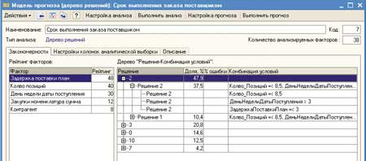

Одна из главных тенденций на рынке учетно-управленческих систем - постоянное повышение спроса на применение средств аналитической обработки данных, обеспечивающих принятие обоснованных решений. Именно поэтому одним из стратегических направлений развития системы ПО "1С:Предприятие" стало постоянное расширение возможностей экономической и аналитической отчетности. Однако сегодня заказчикам уже недостаточно традиционных инструментов, позволяющих формировать разнообразные отчеты, сводные таблицы и диаграммы, которые создаются на основе заранее определенных показателей и связей и которые нужно анализировать вручную. Предприятиям все чаще нужны качественно иные средства, позволяющие автоматически искать неочевидные правила и выявлять неизвестные закономерности (рис. 1). Именно так можно генерировать качественно новые знания на основе накопленной компанией информации и принимать порой совершенно нетривиальные решения для повышения эффективности бизнеса, применяя методы интеллектуального анализа данных (ИАД).
| Рис. 1. Логика развития "интеллектуальности" решаемых аналитических задач.
|
Выпуск летом 2003 г. новой версии технологической платформы "1С:Предприятие 8.0" позволил существенно расширить возможности бизнес-аналитики в системе (см. врезку). Однако тут нужно сделать одно важное замечание. Платформенное ПО "1С" развивается не только "шагами", от версии к версии, но постоянно совершенствуется и расширяется внутри одной версии, причем в двух направлениях - технологическом и прикладном. Так, после первого объявления "восьмерки" выпущено уже более десятка релизов платформы, последняя версия (по состоянию на январь 2006 г.) имеет номер 8.0.13, и она весьма существенно отличается от того, что было два с половиной года назад!
Одно из направлений развития "1С:Предприятие 8.0" - это как раз механизмы бизнес-аналитики; в частности, средства ИАД появились в ней только в 2005 г. Важно отметить, что большинство функций анализа реализованы на уровне технологической платформы и становятся доступными пользователям только после включения в новые релизы прикладных решений. Таким образом, появляется некоторый разрыв (порой в несколько месяцев) между появлением новых возможностей и их предоставлением пользователям.
Имея в виду эту проблему, для сокращения разрыва фирма "1С" выпустила в сентябре 2005 г. специальное прикладное решение "Подсистема анализа данных" (ПАД), которая может встраиваться в любую конфигурацию платформы "1С:Предприятие 8.0". Помимо широкого набора базовых функций, в комплект поставки входят более 30 предварительно настроенных моделей для типовой конфигурации "Управление торговлей". ПАД включает в себя те качественно новые ИАД-средства, которые ранее отсутствовали в программах "1С".
Для непосредственного проведения анализа и прогнозирования данных специфических навыков и знаний не требуется. Предполагается хорошее владение анализируемой предметной областью и понимание основных причинно-следственных связей в ней. Для подготовки источников данных и прогнозных моделей требуется умение использовать построитель запросов и знание принципов размещения информации в объектах метаданных конфигурации.
Алгоритмы ИАД, вошедшие в новую конфигурацию (версия 1.0.5), формируют аналитические модели (шаблоны), которые описывают закономерности в исходных данных. Эти модели представляют самостоятельную ценность (могут многократно использоваться), а также применяются для автоматизированного формирования прогнозов, в том числе сценарных, с заранее неизвестными показателями (рис. 2).
Механизм ИАД представляет собой набор взаимодействующих друг с другом объектов встроенного языка, благодаря чему разработчик может использовать его составные части в произвольной комбинации в любом прикладном решении. Встроенные объекты позволяют легко организовать интерактивную настройку параметров анализа пользователем, а также выводить результат анализа в удобной для отображения форме в табличный документ. Применяя к исходным данным один из видов анализа, можно получить результат, который будет представлять собой некую модель поведения данных. Результат анализа можно отобразить в итоговом документе или сохранить для дальнейшего использования - на его основе можно создать модель прогноза, позволяющую прогнозировать поведение новых данных.
| Рис. 2. Общая схема функционирования механизма интеллектуального анализа данных.
|
В текущей версии подсистемы реализованы методы, получившие наибольшее коммерческое распространение в мировой практике, а именно:
- кластеризация - реализует группировку объектов, максимизируя внутригрупповое сходство и межгрупповые отличия;
- дерево решений - обеспечивает построение причинно-следственной иерархии условий, приводящей к определенным решениям;
- поиск ассоциаций - выполняет поиск устойчивых комбинаций элементов в событиях или объектах.
Ниже мы подробнее рассмотрим суть и возможности практического применения этих методов ИАД.
Кластеризация
Цель кластеризации - выделение из множества объектов одной природы некоторого количества относительно однородных групп (сегментов или кластеров). Объекты распределяются по группам таким образом, чтобы внутригрупповые отличия были минимальными, а межгрупповые - максимальными (рис. 3). Методы кластеризации позволяют перейти от пообъектного к групповому представлению совокупности произвольных объектов, что существенно упрощает оперирование ими. Ниже описаны несколько возможных сценариев применения кластеризации на практике.
Сегментация клиентов по определенной совокупности параметров позволяет выделить среди них устойчивые группы, имеющие сходные покупательские предпочтения, уровни продаж и платежеспособности, что значительно упрощает управление взаимоотношениями с клиентами.
При классификации товаров очень часто используются достаточно условные принципы классификации. Выделение сегментов на основе группы формальных критериев позволяет определить действительно однородные группы товаров. В условиях широкой и довольно разнородной номенклатуры товаров управление ассортиментом на уровне сегментов по сравнению с управлением на уровне номенклатуры существенно повышает эффективность продвижения, ценообразования, мерчендайзинга, управления цепочками поставок.
Сегментация менеджеров позволяет эффективнее спланировать организационные изменения, улучшить мотивационные схемы, скорректировать требования к нанимаемому персоналу, что в конечном счете позволяет повысить управляемость компании и стабильность бизнеса в целом.
| Рис. 3. Анализ данных методом кластеризации.
|
Сходство и различие между объектами определяется "расстоянием" между ними в пространстве факторов. Способ измерения расстояния зависит от метрики, которая указывает принцип определения сходства/различия между объектами выборки. Текущая реализация поддерживает следующие метрики:
- "евклидова метрика" - это стандартное расстояние между двумя точками в N-мерном евклидовом пространстве атрибутов;
- "евклидова метрика в квадрате" - усиливает влияние различия (расстояния) на результат кластеризации;
- "метрика города" - снижает влияние выбросов;
- "метрика доминирования" - определяет различие между объектами выборки как максимальную из существующих разницу между значениями их атрибутов, поэтому полезна для усиления различий между объектами по одному атрибуту.
Способ формирования кластеров на основе информации о расстоянии между кластеризуемыми объектами определяется методом кластеризации. В текущей версии "1С:Предприятие 8.0" реализованы следующие методы кластеризации:
- "ближней связи" - объект присоединяется к той группе, для которой расстояние до ближайшего объекта минимально;
- "дальней связи" - объект присоединяется к той группе, для которой расстояние до наиболее дальнего объекта минимально;
- "центра тяжести" - объект присоединяется к той группе, для которой расстояние до центра кластера минимально;
- метод "k-средних" - выбираются произвольные объекты, которые считаются центрами кластеров, затем все анализируемые объекты последовательно перебираются и присоединяются к ближайшему к ним кластеру. После присоединения объекта рассчитывается новый центр кластера, который вычисляется как среднее значение атрибутов всех объектов, входящих в кластер. Процедура повторяется до тех пор, пока изменяются центры кластеров.
Любой из реализованных в платформе методов кластеризации предполагает явное указание количества искомых кластеров. Для атрибутов объектов можно вводить веса, что позволяет расставлять приоритеты между ними.
В результате анализа с помощью кластеризации получают следующие данные:
- центры кластеров, представляющие собой совокупность усредненных значений входных колонок в каждом кластере;
- таблицу межкластерных расстояний (расстояния между центрами кластеров), определяющих степень различия между ними;
- значения прогнозных колонок для каждого кластера;
- рейтинг факторов и дерево условий, определивших распределение объектов на кластеры.
Алгоритмы кластеризации позволяют не только провести кластерный анализ объектов на множестве заданных атрибутов, но и спрогнозировать значение одного или нескольких из них для актуальной выборки на основании отнесения объектов этой выборки к тому или иному кластеру.
Поиск ассоциаций
Этот метод предназначен для выявления устойчивых комбинаций элементов в определенных событиях или объектах. Результаты анализа представляются в виде групп ассоциированных элементов. Здесь же, помимо выявленных устойчивых комбинаций элементов, приводится развернутая аналитика по ассоциированным элементам (рис. 4).
| Рис. 4. Представление результатов анализа методом "поиска ассоциаций" в виде групп ассоциированных элементов.
|
Первоначально метод был разработан для поиска типичных сочетаний товаров в покупках, поэтому иногда его еще называют анализом покупательской корзины. Применительно к этому сценарию в качестве ассоциируемых элементов, как правило, выступают товарные группы или отдельные товары. А группирующим объектом, объединяющим элементы выборок, может быть любой объект информационной системы, идентифицирующий сделку: например, заказ покупателя, акт об оказании услуг или кассовый чек.
Информация о закономерностях в товарных предпочтениях покупателей повышает эффективность управления отношениями с клиентами (в части рекламных кампаний и маркетинговых акций), ценообразования (формирование комплексных предложений и системы скидок), управления запасами и мерчендайзинга (распределение товаров в торговых залах). Другой пример использования этого метода - определение предпочитаемых клиентами комбинаций рекламных каналов, чтобы исключить их дублирование при проведении целевых рекламных кампаний. Это позволяет существенно снизить издержки на подобные мероприятия.
Реализованный в платформе алгоритм поиска ассоциаций имеет достаточно гибкие средства управления адекватностью моделей анализа или прогноза. Параметр "Минимальный процент случаев" определяет "порог срабатывания" алгоритма на ту или иную комбинацию элементов в событии или объекте, что позволяет не принимать во внимание слабо распространенные ассоциации. Параметр "Минимальная достоверность" определяет требуемую устойчивость искомых ассоциаций, а параметр "Минимальная значимость" позволяет выявить наиболее приоритетные из них. Существенно облегчает восприятие результатов анализа и прогноза параметр "Тип отсечения правил", который может принимать значения "Отсекать избыточные" и "Отсекать покрытые другими правилами".
Для практической интерпретации результатов, полученных с помощью данного алгоритма, критически важно разбиение исходного множества ассоциируемых элементов на действительно однородные с точки зрения проводимого анализа группы.
Дерево решений
В результате применения этого метода к исходным данным создается иерархическая (древовидная) структура правил вида "если... то...", а алгоритм анализа обеспечивает вычленение на каждом этапе наиболее значимых условий и переходов между ними. Данный алгоритм получил наибольшее распространение при выявлении причинно-следственных связей в данных и описании поведенческих моделей. Типичная зона применения деревьев решений - оценка различных рисков, например, закрытия заказа клиентом или его перехода к конкуренту, несвоевременной поставки товара поставщиком или просрочки оплаты товарного кредита (рис. 5). В качестве типичных входных факторов модели выступают сумма и состав заказа, текущее сальдо взаиморасчетов, кредитный лимит, процент предоплаты, условия поставки и иные параметры, характеризующие объект прогноза. Адекватная оценка рисков обеспечивает принятие информированных решений для оптимизации отношения доходность/риск в деятельности компании, а также полезна для увеличения реалистичности различных бюджетов.
|  | |
| Рис. 5. Применение метода "дерево решений" позволяет на основе входных факторов модели (a) получать оценку рисков принятия тех или иных управленческих решений (б).
|
|
В качестве примера, иллюстрирующего способность алгоритма выявлять причинно-следственные связи, можно привести задачу оптимизации работы отдела продаж. Для ее решения в качестве прогнозируемой величины выберем показатель эффективности менеджеров по продажам, например, удельную доходность на клиента, а в качестве факторов - совокупность данных, потенциально влияющих на результат. Алгоритм определит факторы, оказывающие наибольшее влияние на результат, а также типичные комбинации условий, приводящих к тому или иному результату.
Более того, подсистема "Анализ данных" позволит оценить (спрогнозировать) ожидаемые значения целевого показателя на основании актуальных данных, а также составить прогноз "что, если…", изменяя показатели, подаваемые на вход модели. Результаты анализа и прогноза с помощью деревьев решений позволяют существенно снизить влияние неопределенности бизнес-окружения на состояние компании, а также решать широкий спектр задач, связанных с выявлением сложных и неочевидных причинно-следственных связей.
Алгоритм "Дерево решений" формирует причинно-следственную иерархию условий, приводящую к определенным решениям. В результате применения этого метода к обучающей выборке создается иерархическая (древовидная) структура правил расщепления вида "если... то...". Алгоритм анализа (обучения модели) сводится к итеративному процессу вычленения наиболее значимых условий и переходов между ними. Условия могут иметь как количественный, так и качественный характер и формируют "ветви" этого абстрактного дерева. Его "листву" образуют значения прогнозируемого атрибута (решения), которые, как и условия переходов, допускают и качественную, и количественную трактовку. Совокупность этих условий, налагаемых на факторы, и структура переходов между ними до конечного решения и образуют модель прогноза.
Данный алгоритм получил наибольшее распространение при оценке исходов различных событийных цепочек и выявлении причинно-следственных связей в выборках. Управление значимостью и достоверностью модели данного алгоритма осуществляется с помощью параметров "Тип упрощения", "Максимальная глубина дерева" и "Минимальное количество элементов в узле".
В качестве результатов анализа выборки с помощью алгоритма "Дерево решений" выступают:
- рейтинг факторов, представляющий собой список факторов, оказавших влияние на решение, отсортированный в порядке убывания значимости ("цитирования" в узлах дерева);
- сопоставление решений (значений прогнозной колонки) и определивших их условий, иными словами, дерево "Следствие-Причина";
- дерево "Причина-Следствие", представляющее собой совокупность переходов между условиями, определяющую то или иное решение (по сути, визуальное представление модели прогноза).
Совместные решения "1С"Помимо функций, реализованных непосредственно в рамках платформы "1С:Предприятие 8.0", арсенал средств бизнес-аналитики "1С" пополняется специализированными решениями, создаваемыми в том числе в рамках проекта "1С-Совместно" (http://v8.1c.ru/solutions) - с участием партнеров фирмы и независимых разработчиков (см. "Совместные решения фирмы "1С" и ее партнеров", "BYTE/Россия" No 9'2005). Здесь мы отметим два продукта, связанных с применением интеллектуальных методов анализа, - это "1С:Предприятие 8.0. 1С-ВИП Анатех: ABIS. ABC. Управленческий учет и расчет себестоимости" (партнер-разработчик - консалтинговая компания "ВИП Анатех") и "1С-ВИП Анатех-ВДГБ: ABIS. BSC. Сбалансированная система показателей" (партнеры-разработчики - компании "ВИП Анатех" и ВДГБ). |
Типовые бизнес-сценарии использования методов ИАД
В документации ПАД имеется раздел, посвященный типовым примерам применения интеллектуального анализа данных применительно к конфигурации "1С:Управление торговлей 8.0.". Здесь мы приведем несколько таких бизнес-сценариев.
Управление взаимоотношениями с клиентами
Сценарий "Планирование рекламной кампании"
Планирование предстоящей рекламной кампании рассматривается с точки зрения оптимизации распределения выделенного бюджета по рекламным каналам, исходя из регионального, продуктового, клиентского и иных показателей целевого сегмента, а также из эффективности рекламных каналов в указанных разрезах в некотором предшествующем планируемому периоде.
Алгоритм - "Кластерный анализ".
Прогнозные атрибуты - доли откликов на рекламный канал условно однородных сегментов, выделенных алгоритмом.
Вычисляемые колонки - доли рекламных каналов в бюджете рекламной кампании с учетом вероятной доли откликов и эффективности (в смысле результирующей выручки) каждого рекламного канала.
Пример закономерности: клиенты класса А региона П, предпочитающие товарную группу Р, привлечены тем же рекламным каналом, что и клиенты региона Н, предпочитающие товарную группу У.
Управление цепочками поставок
Сценарий "Оптимизация выбора поставщиков по товарной группе"
Выбор доминирующих поставщиков "первого ряда" для ключевых товарных групп чрезвычайно важен для стабилизации системы логистики в частности и общей системы управления цепочками поставок в целом, а также для уменьшения средней продолжительности цепочек поставок. С другой стороны, более тесная интеграция с основными поставщиками, как правило, позволяет существенно снизить себестоимость товаров. В связи с этим представляет интерес анализ устойчивых комбинаций поставщиков в различных товарных группах в сравнении с аналитикой по ассоциированным в рамках групп поставщикам. Это позволяет выявить "пересечения" поставщиков в различных товарных группах и оптимизировать взаимоотношения с ними.
Алгоритм - "Поиск ассоциаций".
Прогнозные атрибуты - устойчивые комбинации поставщиков.
Основные факторы - товарные группы.
Расшифровка - аналитика по поставщикам (объем закупок, выручка, условия поставки и оплаты, сроки выполнения заказа - пессимистичный, оптимистичный, средний).
Пример закономерности: устойчивая ассоциация крупного и непредсказуемого поставщика А и предсказуемого среднего поставщика Б в большом количестве товарных групп. Возможно при формировании заказов по конкурентным товарным группам в качестве основного позиционировать среднего поставщика, если объем заказа крупному не превышает некоторого (дающего существенный выигрыш на масштабах) порога.
Управление персоналом
Сценарий "Профилирование менеджеров отдела продаж по ключевым показателям эффективности"
Определение эффективности менеджеров (удержание, поиск клиентов, эффективность коммуникаций, инкассация условной и безусловной дебиторской задолженности, удельные показатели эффективности на клиента и т. д.) представляет интерес не только с точки зрения формирования системы материального стимулирования менеджеров, но и с точки зрения эффективного нормирования параметров их деятельности.
Алгоритм - "Деревья решений".
Прогнозные атрибуты - ключевые показатели эффективности отдела продаж (количество ключевых клиентов, коэффициенты оттока и привлечения, упущенный доход в месяц, привлеченный доход в месяц, доход в месяц с клиента, суммарные поступления от клиентов и т. д.).
Основные факторы - количество активных клиентов, выручка, доход, удельные показатели на клиента, эффективность коммуникации. В зависимости от прогнозных атрибутов состав факторов может существенно варьироваться.
Пример закономерности: менеджеры, обеспечивающие лучшие показатели инкассации дебиторской задолженности (отношение поступлений ДС к выручке), имеют коэффициент удержания > 0,8; коэффициент привлечения > 0,25; число одновременно открытых сделок не более 15, но не менее 10; интенсивность событий в день не более 10, но не менее 3; число активных клиентов в периоде не менее 50, но не более 100.
Заключение
Современный бизнес столь многогранен, что факторы, потенциально оказывающие влияние на то или иное решение, могут исчисляться десятками. Конкуренция усиливается день ото дня, жизненный цикл товаров укорачивается, предпочтения клиентов меняются все быстрее. Для развития бизнеса необходимо максимально динамично реагировать на стремительно меняющееся бизнес-окружение, учитывая тонкие, а подчас трудноуловимые закономерности развития событий.
Какие группы клиентов откликнутся на рекламную акцию, а какие безвозвратно уйдут к конкурентам? Открывать новую бизнес-линию или пока повременить? Не просрочит ли покупатель платеж, а поставщик - отгрузку? Каковы возможности для роста и где скрываются потенциальные угрозы? Такие вопросы ежедневно задают себе и коллегам тысячи менеджеров.
Подсистема анализа данных, реализованная в платформе "1С:Предприятие 8.0", призвана помочь пользователям корпоративной информационной системы быстрее находить ответы на нетривиальные вопросы, обеспечивая автоматизированное преобразование данных, накопленных в информационной системе, в полезные на практике и хорошо интерпретируемые закономерности.
Экономическая и аналитическая отчетность в "1С:Предприятие 8.0"В состав платформы "1С:Предприятие 8.0" входит целый ряд механизмов формирования экономической и аналитической отчетности, позволяющих формировать интерактивные документы (а не просто печатные формы) в рамках тех или иных прикладных решений. Таким образом, пользователь может работать с отчетами так же, как с любой экранной формой, в том числе изменять параметры отчета, перестраивать его, использовать "расшифровки" (получение дополнительных отчетов на основе отдельных элементов уже сформированного отчета) и т. д. Кроме того, имеется несколько универсальных программных средств, позволяющих формировать любые произвольные отчеты, в зависимости от поставленных задач. Это могут делать в том числе и сами пользователи (достаточно опытные), хорошо знакомые со структурой используемого прикладного решения. Ниже мы кратко рассмотрим основные средства подготовки отчетности в "1С:Предприятие 8.0". Запросы - это один из способов доступа к данным в "1С:Предприятие 8.0", с помощью которого выполняется выборка информации из базы данных по определенным условиям, как правило, в сочетании с простейшей обработкой получаемых данных: сгруппировать, отсортировать, вычислить. Изменение данных с помощью запросов невозможно, так как они изначально предназначены для быстрого получения сведений из больших массивов информации. БД реализована в виде совокупности связанных между собой таблиц, к которым можно обращаться как по отдельности, так и к нескольким таблицам во взаимосвязи. Для реализации собственных алгоритмов разработчик может использовать язык запросов, основанный на SQL и содержащий множество расширений, отражающих специфику финансово-экономических задач и уменьшающих усилия, потраченные на создание прикладных решений. В состав платформы входит конструктор запросов, который позволяет составить правильный текст запроса, используя только визуальные средства (рис. 6).
Табличный документ представляет собой мощный механизм визуализации и редактирования информации, в том числе с использованием динамического считывания информации из базы данных. Табличный документ может применяться сам по себе или же входить в состав любой из форм, используемых в прикладном решении. По своей сути он напоминает электронные таблицы (состоит из строк и столбцов, в которых размещаются данные), но его возможности гораздо шире. В нем поддерживается выполнение операций группировки, расшифровки, включения примечаний. В документе можно применять различные виды оформления отчета, в том числе графические диаграммы. Табличный документ может содержать сводные таблицы, которые сами по себе служат эффективным инструментом программного и интерактивного представления многомерных данных. Конструктор выходной формы помогает разработчику создавать отчеты и представлять данные отчетов в удобном табличном или графическом виде. Он включает в себя все возможности конструктора запросов, а также создания и настройки формы. Построитель отчета - это объект встроенного языка, который предоставляет возможность динамического создания отчета как программными, так и интерактивными средствами (рис. 7). В основе его работы лежит запрос, по которому пользователю дается возможность интерактивной настройки всех основных параметров, содержащихся в тексте запроса. Результаты выполнения этого запроса выводятся в табличный документ, в котором могут также использоваться сведения из произвольных источников данных. Разработчик, используя команды построителя отчета, может изменить состав параметров, доступных пользователю для настройки.
Географические схемы позволяют наглядно представлять информацию, имеющую территориальную привязку: к странам, регионам, городам. Данные на них могут отображаться различными способами: в виде текста, гистограммы, цветом, картинкой, кругами различного диаметра и цвета, круговыми диаграммами. Это позволяет отобразить, например, объемы продаж по регионам в графическом виде. Пользователь может изменять масштаб отображаемой схемы, получать расшифровки при щелчке мышью на объектах схемы и даже создавать новые географические схемы. Географическую схему можно также использовать просто для отображения тех или иных географических данных, например, схемы проезда к офису или маршрута движения транспортного средства. Интеллектуальный анализ данных. Эти механизмы позволяют выявлять неочевидные закономерности, которые обычно скрываются за большими объемами информации. Здесь используются взаимодополняющие методы обнаружения знаний, получившие наибольшее коммерческое распространение в мировой практике: кластеризация (группировка относительно сходных объектов), поиск ассоциаций (поиск устойчивых комбинаций событий и объектов) и дерево решений (построение причинно-следственной иерархии условий, приводящей к определенным решениям). Консоль запросов и консоль отчетов. Обе эти консоли не входят в состав технологической платформы, а представляют собой внешние отчеты, которые могут запускаться в любом прикладном решении. Они помогают разработчику или опытному пользователю соответственно составить текст запроса и проанализировать его результаты или оформить произвольный отчет. |
||||||